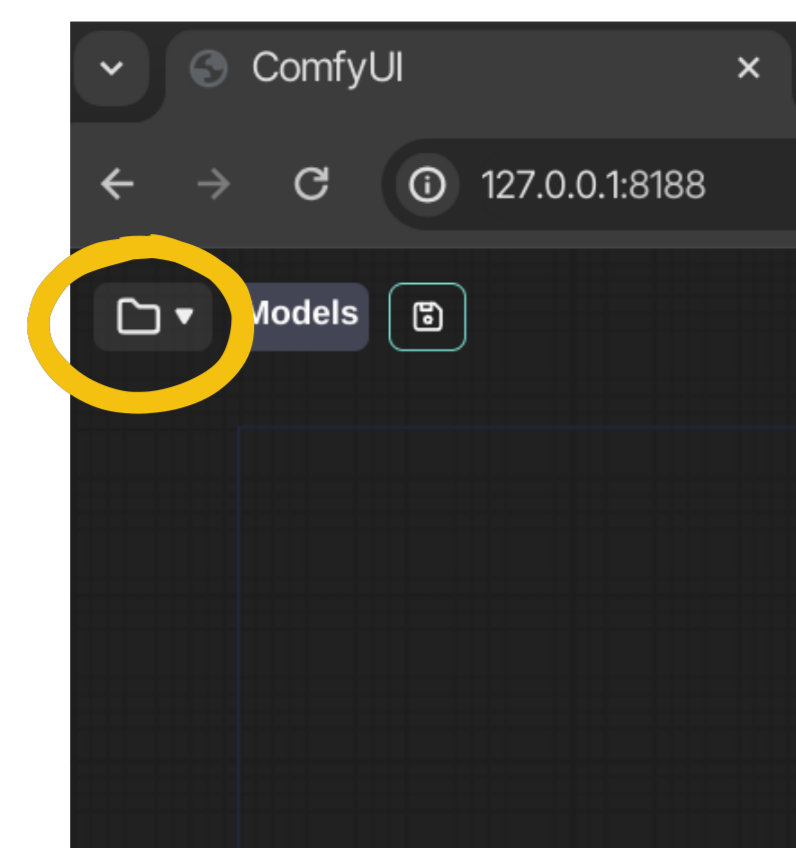
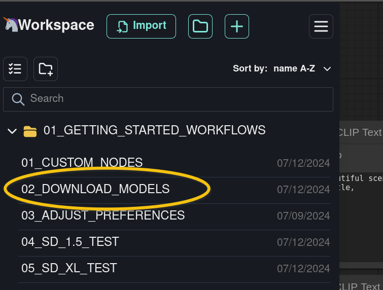
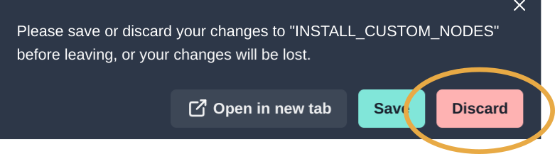
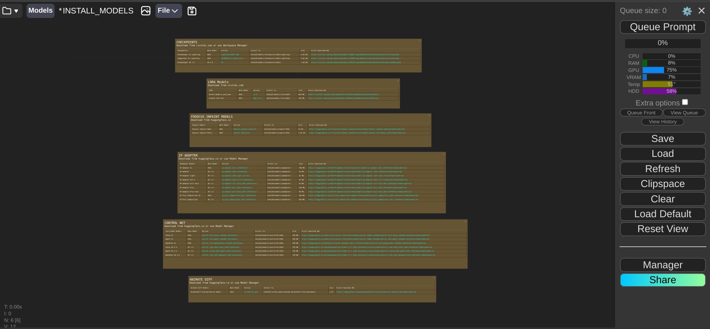
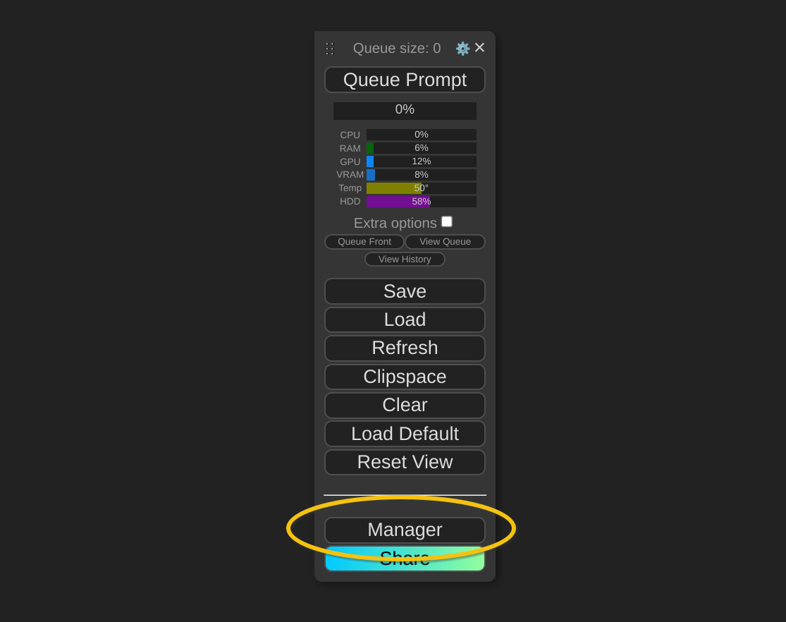
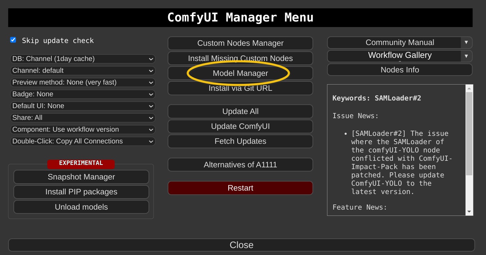
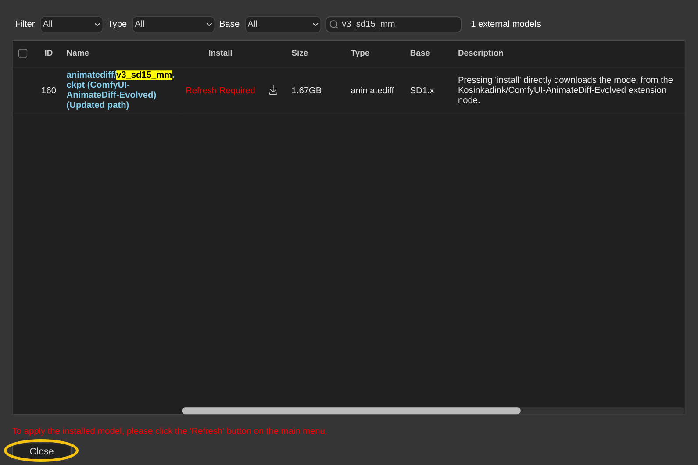
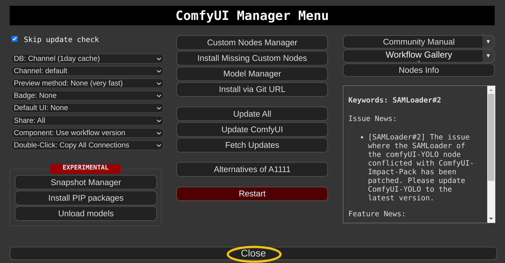
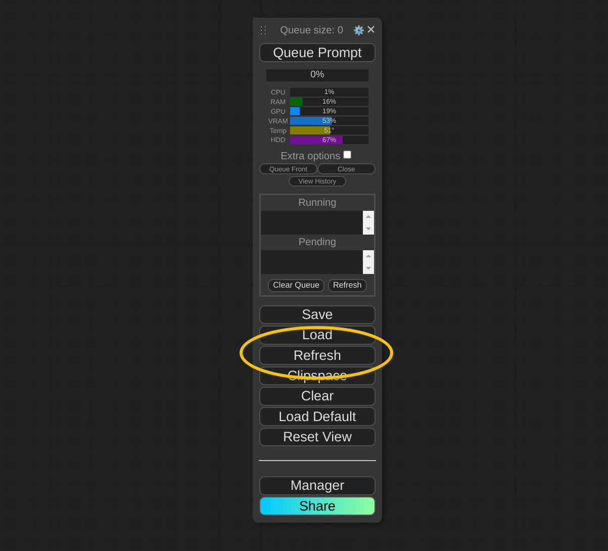

AI models and checkpoints are large files that contain the results of machine learning training. Without models, it is impossible to generate images in ComfyUI.
Models can be obtained from two main sources online: civitai.com and huggingface.co.
To complete the exercises in this course, we will need multiple AI models:
Dreamshaper 8
DreamShaper XL (Lightning)
Juggernaut XL (Lightning)
LORA models
Inpaint models
ControlNet models
IPAdapter models
AnimateDiff motion models
Upscaler models
These files tend to be quite large (up to 6GB per model), so plan enough disk space and time to download them.
This document will guide you on how to install the required models for this course.
OPEN COMFYSPACEComfyspace Toolbar -> Folder icon. |  |
OPEN THE 'DOWNLOAD MODELS' WORKFLOWClick on 01_GETTING_STARTED_WORKFLOWS -> 02_DOWNLOAD_MODELS |  |
If prompted, discard your changes to the 01_CUSTOM_NODES workflow.

A workflow with a list of models to download appears. 
Use middle+drag (or space+drag) to move around the node graph.
Use the scroll wheel to zoom in and out.
Save the .safetensors files to ComfyUI/models/checkpoints/SDXL/lightning.
You will need to create the SDXL/lightning sub-folders manually.
ComfyUI/ refers to your ComfyUI install folder.
For ComfyUI installations that were created following this tutorial you can find your own ComfyUI/ folder here:
Windows: C:\comfyui\portable\ComfyUI
MacOS: /Applications/ComfyUI/ComfyUI
Linux: /opt/comfyui/ComfyUI
These files can be quite large (6.5GB each). This might take a while to download.
Save the .safetensors file to ComfyUI/models/checkpoints/SD15/.
You will need to create the SD15 sub-folder manually.
This file is quite large (2GB). This might take a while to download.
Save both .safetensors files to ComfyUI/models/loras/SDXL/.
You will need to create the SDXL sub-folder manually.
Save the .pth and .patch files to ComfyUI/models/inpaint/SDXL/.
You will need to create the inpaint/SDXL sub-folders manually.
This file is quite large (1.3GB). This might take a while to download.
Save the .safetensors file to ComfyUI/models/controlnet/.
Save .safetensors files to ComfyUI/models/controlnet/.
OPEN MANAGERToolbar -> Manager |  |
OPEN MODEL MANAGERClick on Model Manager |  |
comfyui ipadapter plus.You can check the progress of the downloads in the Terminal where ComfyUI Server was launched.
The .safetensors files are installed automatically in ComfyUI/models/ipadapter/
ip-adapter _vit-h.You can check the progress of the downloads in the Terminal where ComfyUI Server was launched.
The .safetensors files are installed automatically in ComfyUI/models/ipadapter/
CLIPVision model (IP-Adapter).You can check the progress of the downloads in the Terminal where ComfyUI Server was launched.
The .safetensors files are installed automatically in ComfyUI/models/clip_vision/
These files are 2.53GB and 3.89GB respectively. This might take a while to download.
upscaler model.You can check the progress of the downloads in the Terminal where ComfyUI Server was launched.
The .pth files are installed automatically in ComfyUI/models/upscale_models/
v3_sd15_mm.You can check the progress of the download in the Terminal where ComfyUI Server was launched.
The .ckpt file is installed automatically in ComfyUI/models/animatediff_models/
CLOSE THE MODEL MANAGERClick Close. |  |
CLOSE THE MANAGERClick Close. |  |
REFRESH COMFYUIClick Refresh in the main toolbar. |  |
ComfyUI Server scans the ComfyUI/models directory and makes newly installed models available for use.
Yes. All the models from the list have been downloaded and installed.